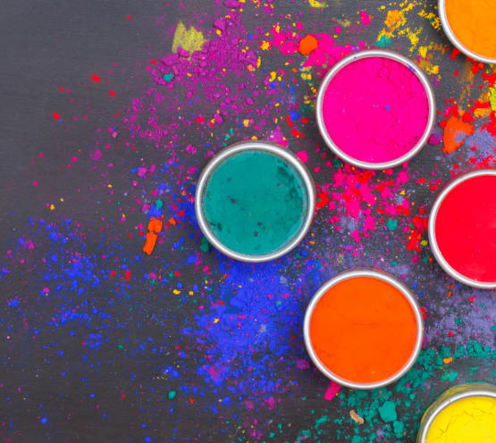
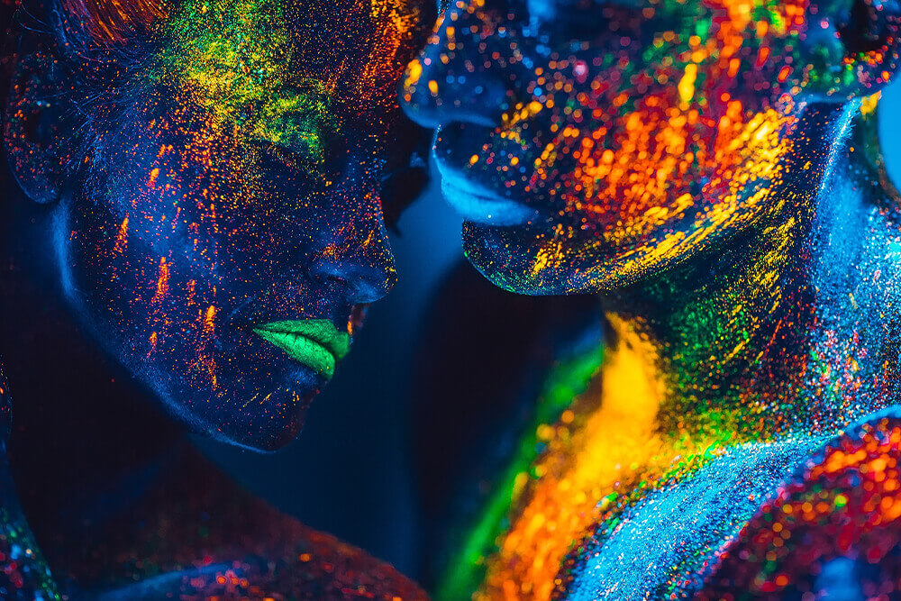
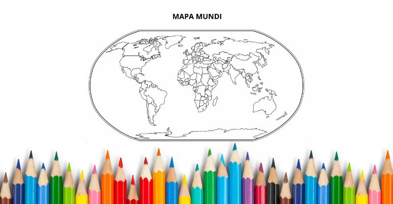

CORES
CULTURAIS
Explore o universo das cores, suas propriedades físicas, percepção visual e aplicações na arte, design e tecnologia.
Explore o universo das cores, suas propriedades físicas, percepção visual e aplicações na arte, design e tecnologia.

As cores têm significados diferentes dependendo da cultura, da religião, da história e até do contexto social. Um mesmo tom pode representar alegria em um lugar e luto em outro. O primeiro caráter do simbolismo das cores é, portanto, sua universalidade, não só geográfica, mas também em todos os níveis do conhecimento. As interpretações, no entanto, podem variar dependendo da cultura, ou melhor, da sua função cultural. “O vermelho, por exemplo, recebe diversas significações conforme as culturas. As cores permanecem, no entanto, sempre e, sobretudo, como fundamentos do pensamento simbólico” (CHEVALIER; GHEERBRANT, 1982, p. 275).
CUTURALMENTE:
▪ Mundial - cor masculina
▪ China - cor para meninas
▪ Irã - luto
▪ Tradição ocidental de casamento - amor
▪ No mundo todo - cor corporativa mais popular.
CUTURALMENTE:
▪ Costa do marfim - vermelho escuro indica morte
▪ França - masculinidade
▪ Ásia - casamento, prosperidade, felicidade
▪ África do sul - cor do luto
CUTURALMENTE:
Budismo - cor usada pelos monges
▪ Egito e burma - luto
▪ Índia - cor do comerciante ou fazendeiro
▪ Cultura hindu - festival da primavera
▪ Japão - coragem
CULTURALMENTE:
Irlanda - movimento protestante no norte
▪ Nativa americana - aprendizado e laços de sangue
▪ Índia - hinduismo
▪ Holanda - cor nacional pela origem da nobreza de orange-nassau
CULTURALMENTE:
América latina - morte
▪ Tailândia - usado por viúvas
▪ Japão - cerimônia, iluminação e arrogância
CULTURALMENTE:
▪ Islã - associado a paraíso, símbolo do irã
▪ Irlanda - associado fortemente a esse país - são patrício / trevo
▪ Culturas celtas - o “homem verde” é o deus da fertilidade
▪ Curiosidades: é a cor mais suave para a visão, cor calmante e Revigorante

MAPA DAS CORES
Objetivo
Entender como diferentes países associam cores a tradições, cultura e identidade.
Instruções
Pegue um mapa-múndi simples (em preto e branco).
Use as cores abaixo para pintar cada país conforme sua tradição cultural.
Crie uma legenda no canto do mapa.
Países e suas cores principais
China - Vermelho (sorte, festas e prosperidade)
India - Laranja/Açafrão (espiritualidade e tradição)
Japan - Vermelho e branco (cultura e simbolismo tradicional)
Brazil - Verde e amarelo (natureza, riqueza e identidade nacional)
Mexico - Cores vibrantes (rosa, laranja, azul) (festas e cultura popular)
South Africa - Vermelho, verde, preto, amarelo (diversidade cultural)
Thailand - Cores da semana (amarelo, vermelho, azul etc.)
Egypt - Verde e dourado (vida, história e realeza antiga)
United Kingdom - Roxo e azul escuro (tradição e realeza)
Nigeria - Verde e branco (natureza e identidade nacional)
Desafio extra
Crie um novo mapa imaginário onde cada país tenha uma “cor emocional” (ex: alegria, paz, força).
Explique por que você escolheu cada cor.
